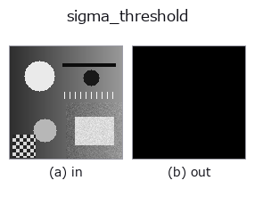

segmentation op• Datenarten: image → region
• Aufruf: fullseye.apply(img, "sigma_threshold", a=0.5, b=0.5) (das 2-D-Modell ist ein Bild plus zwei skalare Regler a,b∈[0,1])

*Die Abbildung ist die tatsächliche Ausgabe auf einer synthetischen 128×128-Eingabe. Links Eingabe, rechts Ausgabe. Punktwolken als Draufsicht-Streudiagramm (Helligkeit = z), 1-D-Reihen als Linie, Volumen als Maximum-Projektion entlang z, Videos als mittleres Bild, komplexe Bilder als Betrag; Rückgabewerte, die kein Bild ergeben, werden als Werte gezeigt.*
*Regler a ändert die Ausgabe nicht (gemessen: identisch bei 0,1 / 0,5 / 0,9).*
*Regler b ändert die Ausgabe nicht (gemessen: identisch bei 0,1 / 0,5 / 0,9).*
Auf anderen Bildern (synthetische Szene / Foto / Münzen. Obere Reihe: Eingaben, untere Reihe: deren Ausgaben. Regler auf Standard):
▸ sigma_threshold: andere Eingaben (Doku-Website)
*Die 4. Spalte ist eine Farb-Eingabe (H,W,3). Dieser Op verarbeitet Farbe, ohne Kanäle zu vermischen (er faltet den Farbkanal nicht als dritte Raumachse).*
Standardisiert ein Bild robust und binarisiert es bei k = 2 + 3*a Sigma.
> Die ausführliche Beschreibung unten ist der Originaltext — Zusammenfassung und Überschriften sind übersetzt.
b の 3 帯が明側 x>k / 暗側 x<-k / 両側 |x|>k。image sort の入力は [0,1] 強度なので、この 2-D レジストリ版は中央値と 1.4826×MAD で内部標準化してから比較する。名前付き API は既に σ 単位の入力も直接扱える。
空入力は σ単位を検査できないため拒否し、空 region へ黙って落とさない。
Regler (gemessen): a wirkt stufenweise; die Umschaltpunkte liegen bei a ≈ 0.01、0.03、0.05 (gemessen mit Schrittweite 0.02).
• Katalog der Beispieldaten (Download-URLs / Lizenzen) — 2-D nutzt skimage.data (BSD/Public Domain) plus synthetische Bilder, 3-D nennt Download-URLs echter Datenquellen (Stanford, PDS, …).
• Herkunft und Literatur der Operatoren — die Quellen der Forschung/Verfahren, auf denen diese Operatorfamilie beruht.
Das Programm unten ist nachweislich lauffähig (gleiche Eingabe wie die Abbildung). In der Studio-Hilfe wird dieser Block zu Schaltflächen, die es sofort laden und ausführen.
sigma_threshold 0.50 0.50
▸ Diese Pipeline laden · Laden & ausführen
• poc_threshold_transfer_after_normalization — py -3.11 examples/poc_threshold_transfer_after_normalization.py
region als Eingabe)identity · reg_erode · reg_dilate · reg_open · reg_close · fill_holes · select_largest · remove_small
segmentation)threshold · ptile_threshold · otsu · canny · adaptive_gauss_thresh · sk_otsu · sk_li · sk_yen
*Provenance: ops.py — 2D Operator-Registry. Diese Notiz wird von tools/opdocs.py md erzeugt (nicht von Hand bearbeiten).*
© 2026 Kazufumi Furuse — Fullseye operator documentation. Licensed under Apache-2.0.